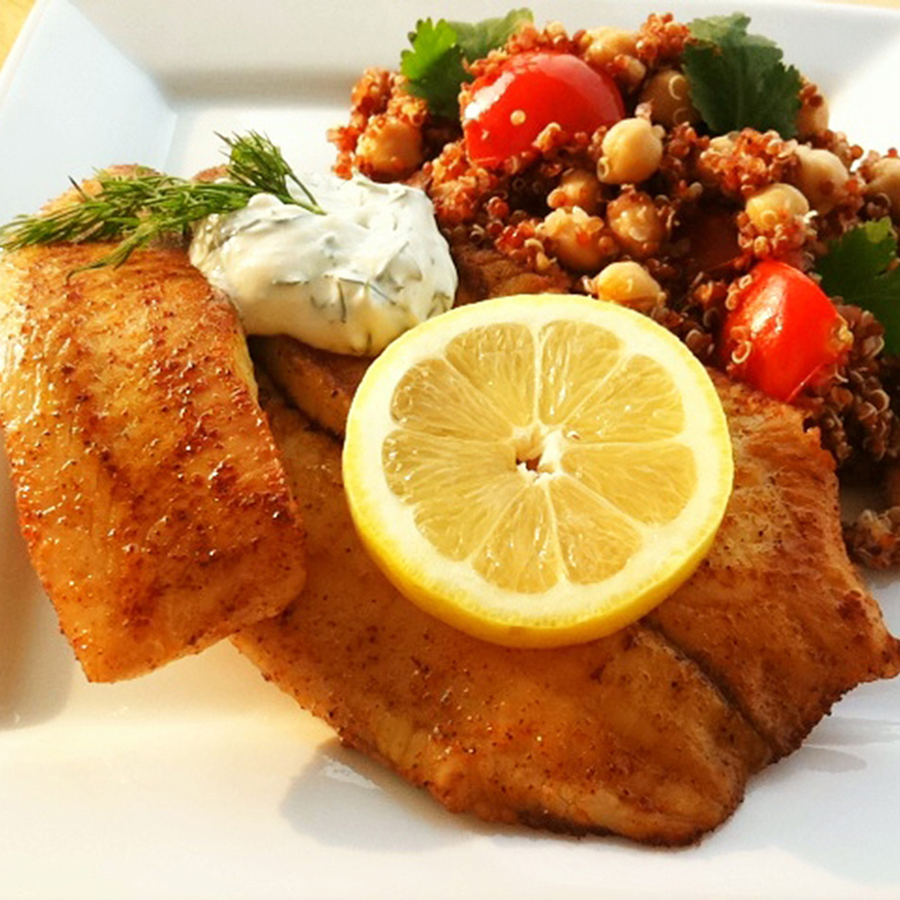

Baked Tilapia with Dill Sauce

Description
Baked tilapia seasoned with Cajun and citrus served with a creamy sauce of fresh dill and lemon.
Ingredients
- 4 (4 ounce) fillets tilapia
- salt and pepper to taste
- 1 tablespoon Cajun seasoning, or to taste
- 1 lemon, thinly sliced
- ¼ cup mayonnaise
- ½ cup sour cream
- ⅛ teaspoon garlic powder
- 1 teaspoon fresh lemon juice
- 2 tablespoons chopped fresh dill
Steps
- Preheat the oven to 350 degrees F (175 degrees C). Lightly grease a 9x13 inch baking dish.
- Season the tilapia fillets with salt, pepper and Cajun seasoning on both sides. Arrange the seasoned fillets in a single layer in the baking dish. Place a layer of lemon slices over the fish fillets. I usually use about 2 slices on each piece so that it covers most of the surface of the fish.
- Bake uncovered for 15 to 20 minutes in the preheated oven, or until fish flakes easily with a fork.
- While the fish is baking, mix together the mayonnaise, sour cream, garlic powder, lemon juice and dill in a small bowl. Serve with tilapia.